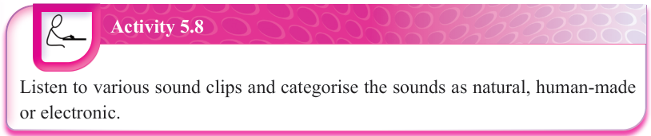
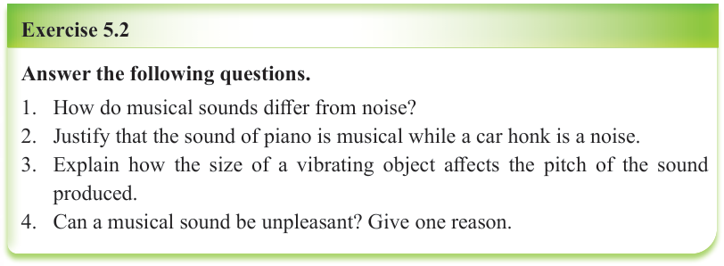

(b) Human-made sources: For example, vocal sounds such as singing and humming; instrumental sounds such as guitars, drums, flutes and others.
(c) Electronic sources: For example, synthesizers and speakers used in modern music production, computer-generated music such as Artificial Intelligence (AI) and software that create digital sounds.

Activity 5.8
Listen to various sound clips and categorise the sounds as natural, human-made or electronic.


Exercise 5.2
Answer the following questions.
Theories explaining the existence of musical sounds
Music is a universal language that has been part of human life for centuries. The existence of musical sounds can be explained through multiple theories, each presenting a different view. These theories work together to give us a complete understanding of why musical sounds exist and why music is such an important part of human life. The following are examples of theories that explain the existence of musical sounds:
(a) The physical theory: This theory explains that musical sounds exist because of vibrations. When an object vibrates, it creates sound waves that travel through air, water or solids until they reach the human ear. For example, a vibrating guitar string pushes air molecules, producing sound waves. The frequency of these vibrations determines the pitch of the sound. Faster vibrations produce high-pitched sounds (such as a whistle), while slower vibrations create low-pitched sounds (such as a drum). According to this theory, changing the shape, size or material of musical instruments can affect the sound they produce.